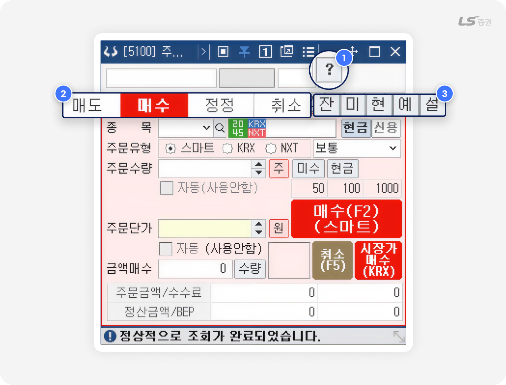
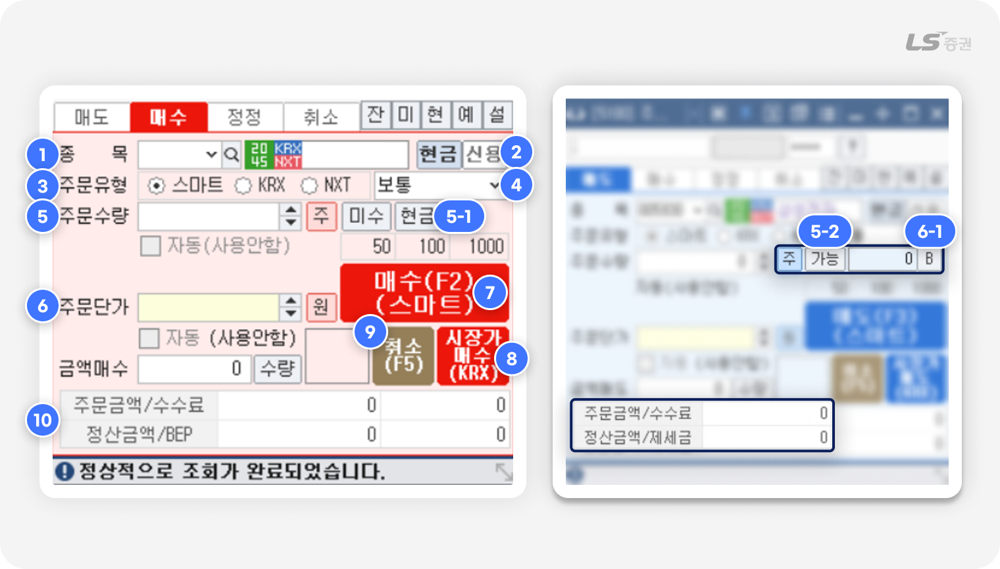
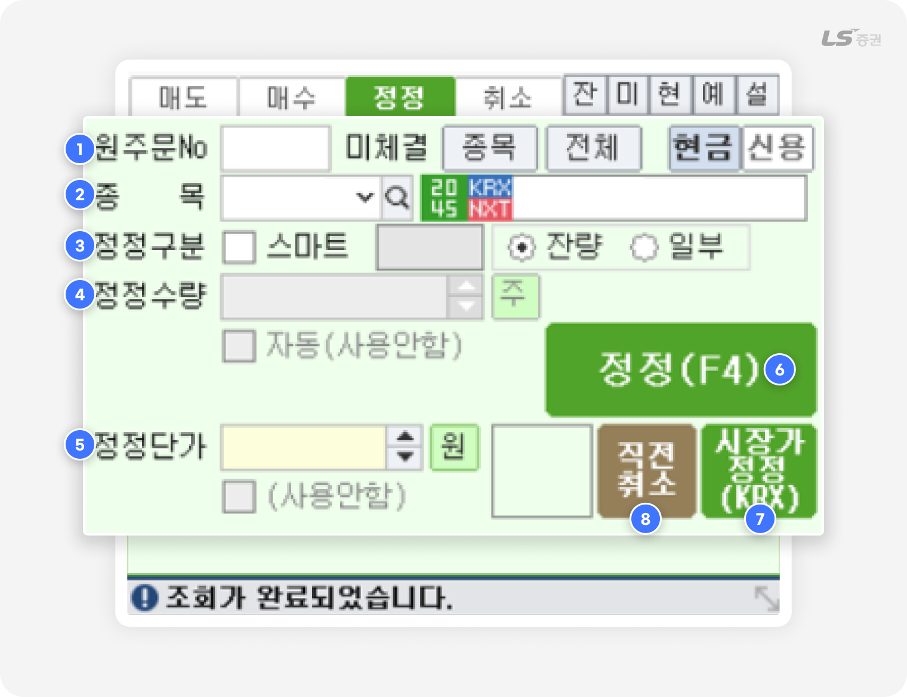
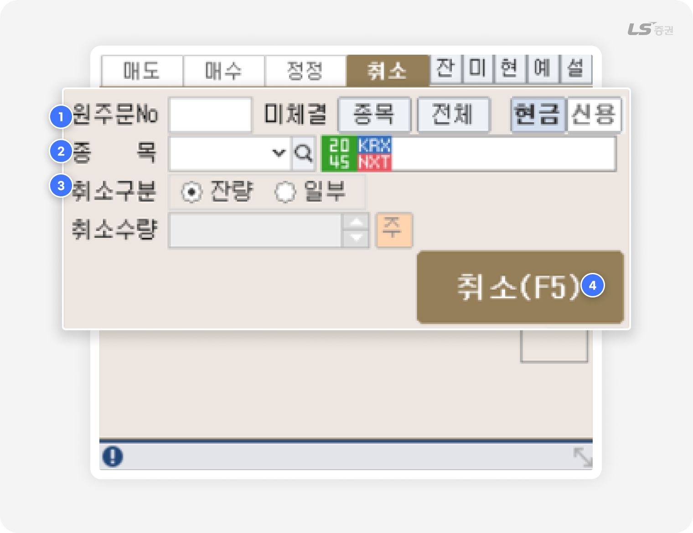
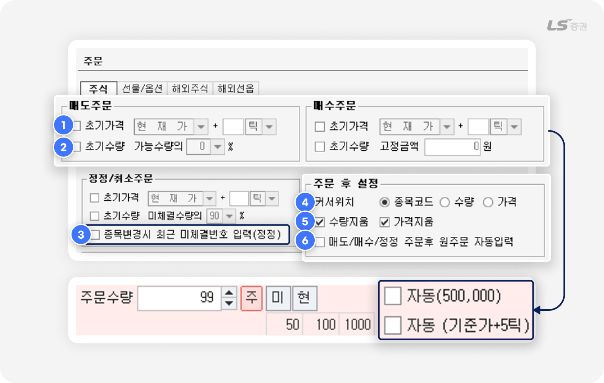
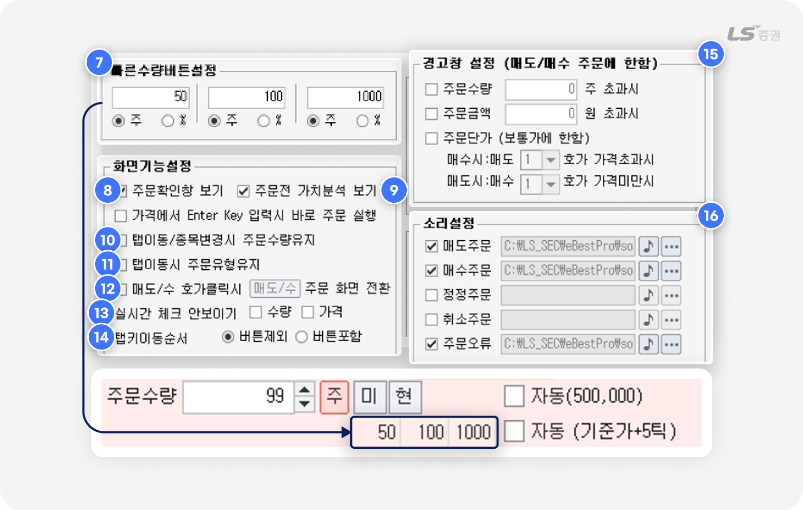
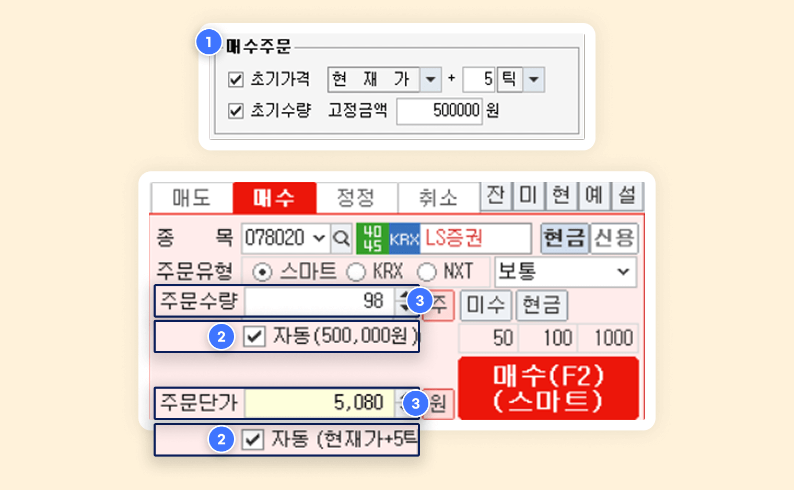

.png)
[5100] 주식주문
주식 거래의 시작,
네 가지 주문으로 쉽고 간단하게
주식 거래를 하면 반드시 접하게 되는 네 가지 주문 방법이 있는데요, 매수 주문, 매도 주문, 정정, 취소 주문입니다.
[5100] 주식주문 화면은 주문에 필요한 핵심 기능을 갖추고 있어서 기본적인 구조를 익히면 다른 주문 화면도 쉽게 이용할 수 있습니다.
주식 거래할 때 필수 기능을 눌러담은
주식주문 화면, 이렇게 활용해요
| 기능 | 특징 |
|---|---|
| 나만의 매매 환경 조성 | 주요 화면과 조합하여 최적의 투자 레이아웃 구성 |
| 계좌 현황 확인 | 잔고, 예수금 등 내 계좌를 바로 확인하고 주문으로 연결 |
| 정산 비용 확인 | 한 눈에 알기 쉬운 주문금액, 수수료, 정산금액 BEP단가 표기 |
주식주문을 소개합니다
01화면 구성

-
1
주문 시 유의사항 안내
- 지정가, 시장가 등 주문 유형과 주문 시 유의사항을 확인할 수 있습니다.
-
2
주문 탭
- 매도, 매수, 정정, 취소 중 선택한 탭에 따라 화면 하단에 해당 주문 화면이 표시됩니다.
-
3
주문 보조 버튼
- 잔 : 보유한 주식 잔고를 확인할 수 있습니다.
- 미 : 미체결 주문 내역을 확인할 수 있습니다.
- 현 : [1101] 현재가 화면에서 선택한 종목 정보를 조회합니다.
- 예 : [6202] 예수금 화면에서 계좌 상태를 확인할 수 있습니다.
- 설 : ‘종합환경설정’ 화면에서 각종 주문 설정을 할 수 있습니다.
시장에 나온 주식을 사거나, 내 주식을 시장에 내놓는
02매수/매도 주문하기

-
1
종목 입력
- 주문하려는 종목을 선택합니다.
- 종목명에 마우스를 올리면 간단한 종목 정보가 표시됩니다.
- 종목명을 클릭하면 기업 정보를 조회하거나 종목 메모를 작성할 수 있는 팝업이 표시됩니다.
-
2
현금주문 / 신용주문 전환 버튼
- 주문 시 결제 방법을 선택합니다.
- 신용 / 대출 서비스를 신청하면 신용주문으로 매수 시 자금을 빌리거나, 매도 시 주식을 빌릴 수 있습니다.
-
3
거래소 선택
- 스마트 / KRX / NXT 중 주문하려는 거래소를 선택합니다.
- 스마트는 당사가 정한 최선집행기준(SOR)에 따라 KRX와 NXT 중 한 곳으로 주문을 제출합니다.
- 스마트주문시스템(SOR)에 대한 자세한 설명은 홈페이지에서 확인할 수 있습니다.
-
4
주문유형 선택
- 보통(지정가), 중간가 등 주문유형을 선택합니다.
-
5
주문수량 입력
- 수량을 직접 입력하거나 ‘주‘ 버튼을 눌러 지정 수량을 선택해 입력할 수 있습니다.
- (5-1번) 매수 주문인 경우, '미수' 버튼 및 '현금' 버튼을 클릭하면 요건에 따른 매수가능 수량이 입력됩니다.
- (5-2번) 매도 주문인 경우, '가능' 버튼을 클릭하면 잔고 기준으로 매도가능 수량이 입력됩니다.
-
6
주문단가 입력
- ‘원’ 버튼을 눌러 호가창에서 주문단가를 선택할 수 있습니다.
- (6-1번) 매도 주문인 경우, 'B' 버튼을 클릭하면 BEP단가 기준으로 계산된 주문단가가 자동으로 입력됩니다.
-
7
매수 주문 / 매도 주문 버튼
- 직접 클릭하거나 단축키로 매수 주문(F2) 또는 매도 주문(F3)을 할 수 있습니다.
-
8
시장가 매수 주문 / 시장가 매도 주문 버튼
- 주문 단가 없이 주문 수량 입력만으로도 KRX 시장가 매수/매도 주문을 할 수 있습니다.
-
9
주문 취소 버튼
- 매수/매도 화면에서도 버튼이나 단축키로 빠르게 미체결 주문을 취소(F5)할 수 있습니다.
-
10
주문 전 비용 추산
- 주문금액, 수수료, 정산금액, BEP 단가, 제세금 등 예상 비용을 보여줍니다.
참고해주세요!
주문 화면에 표시되는 수수료 / 제세금은 아래와 같이 추정된 값으로, 실제 주문 시 비용과 다를 수 있습니다.
- 수수료 : HTS 일괄 수수료로 계산
- 제세금 : 0.3% 일괄 적용
수수료 및 세금에 대한 자세한 사항은 LS증권 홈페이지 메뉴에서 확인할 수 있습니다.
- 고객센터 - 고객가이드 - 업무안내 - 수수료 / 세금 확인하기
BEP 단가를 고려하며 거래하자
BEP란 손익분기점, 즉 수수료 · 세금 등 제비용을 포함해 손익이 0이 되는 기준 가격으로 투자 원금을 회수하는 손절 지점이나, 이익을 얻는 매도 목표가를 정하는 데 참고할 수 있어요.
주식 주문유형 정리
| 보통(지정가) | 지정한 가격으로 주문 |
|---|---|
| 중간가 | 최우선 매수호가와 최우선 매도호가의 중간 가격 |
| 스톱지정가 | 직전체결가(현재가)가 지정한 조건단가에 도달할 때 지정한 주문단가로 주문 |
| 최유리지정가 | 상대 1차 호가에 지정 |
| 최우선지정가 | 동일 방향 1차 호가에 지정 |
| 시장가 | 주문단가를 지정하지 않고 시장에서 형성되는 가격으로 자동 지정 |
| 장전 시간외 | 정규장 시작 전 시간외 거래 (08:30~08:40) |
| 장후 시간외 | 정규장 종료 후 시간외 거래 (15:40~16:00) |
| NXT종가 | KRX의 당일 정규장 종가를 기준으로 15:30~16:00 사이 단일가 매매 |
FOK / IOC 주문조건이란?
-
FOK(Fill-Or-Kill)은 모든 수량을 체결할 수 있을 때만 주문을 체결하고, 단 1주라도 체결할 수 없으면 주문 전체를 취소합니다.
예) 50주 주문 시 40주만 체결 가능한 경우, 50주 주문 전체를 취소합니다. -
IOC(Immediate-Or-Cancel)은 체결 가능한 수량만큼 체결하고, 체결되지 않은 잔량은 취소합니다.
예) 50주 주문 시 40주만 체결 가능한 경우, 40주를 체결하고 10주는 취소합니다.
더 나은 전략으로 바꾸는
03주문 정정하기

-
1
종목 입력
- 정정하려는 주문번호를 입력합니다.
- ‘종목’ 버튼 클릭 시 종목별 미체결 주문, ‘전체’ 버튼 클릭 시 전체 미체결 주문에서 선택할 수 있습니다.
-
2
정정 주문 대상 종목 확인
- 주문번호 입력 시 정정하려는 주문 종목을 확인할 수 있습니다.
-
3
정정구분 선택
- 기본적으로 주문한 거래소로 정정 주문을 보내지만, ‘스마트’에 체크하면 당사가 정한 최선집행기준(SOR)에 따라 KRX와 NXT 중 한 곳으로 주문을 제출합니다.
- ‘잔량’은 원래 주문의 모든 수량을, ‘일부’ 는 일부 수량만 주문 단가를 정정합니다.
- 스마트주문시스템(SOR)에 대한 자세한 설명은 홈페이지에서 확인할 수 있습니다.
-
4
정정수량 입력
- 수량을 직접 입력하거나 ‘주' 버튼을 눌러 지정된 수량을 선택할 수 있습니다.
-
5
정정단가 입력
- ‘원’ 버튼을 눌러 호가창에서 주문단가를 선택할 수 있습니다.
-
6
정정 주문 버튼
- 직접 클릭하거나 단축키(F4)로 주문을 정정할 수 있습니다.
-
7
시장가 정정 주문 버튼
- 주문 단가 없이 정정 수량만 입력 후 KRX 시장가로 주문을 정정할 수 있습니다.
-
8
직전 취소 버튼
- 가장 최근에 정정한 주문을 취소할 수 있습니다.
주의하세요!
- 주문이 체결되었다면 정정하거나 취소할 수 없습니다.
빠른 판단 아래 물러나는 방법
04주문 취소하기

-
1
종목 입력
- 취소하려는 주문번호를 입력합니다.
- ‘종목’ 버튼 클릭 시 종목별 미체결 주문, ‘전체’ 버튼 클릭 시 전체 미체결 주문에서 선택할 수 있습니다.
-
2
취소 주문 대상 종목 확인
- 주문번호 입력 시 취소하려는 주문 종목을 확인할 수 있습니다.
-
3
취소구분 선택 및 취소수량 입력
- ‘잔량’은 원래 주문의 모든 수량을, ‘일부’ 는 일부 수량을 취소합니다.
- 수량을 직접 입력하거나 ‘주‘ 버튼을 눌러 지정된 수량을 선택할 수 있습니다.
-
4
취소 주문 버튼
- 직접 클릭하거나 단축키(F5)로 주문을 취소할 수 있습니다.
알아두면 유용한
05기타 기능
주문 설정 기능
[종합환경설정] 에서 자세한 주문 기능을 설정할 수 있습니다.
나에게 잘 맞는 주문 환경을 만들어보세요.

주문 전 자동 입력 설정
-
1
초기가격 : 체크 시 매도/매수/정정 주문 화면에서 주문단가에 초기 설정 가격이 자동 입력됩니다.
-
2
초기수량 : 체크 시 매도/매수/정정 주문 화면에서 주문수량에 초기 설정 수량이 자동 입력됩니다.
-
3
종목변경시 최근 미체결번호 입력(정정) :
체크 시 정정/취소 주문 화면에서 직전 미체결 주문 번호가 자동 입력됩니다.
주문 후 설정
-
4
커서위치 : 주문 후 커서가 이동할 곳을 지정합니다.
-
5
수량지움 / 가격지움 : 체크 후 주문 시 입력한 수량 또는 가격을 주문 실행 후 유지하지 않고 삭제합니다.
-
6
매도/매수/정정 주문후 원주문 자동입력 :
체크 시 정정/취소 주문 화면을 조회하면 최근 매도/매수/정정 주문 번호가 자동 입력됩니다.

빠른 수량 버튼 설정
-
7
매도/매수 주문 화면에서 클릭 입력하는 주문수량 기준을 설정할 수 있습니다.
총 3개의 기준을 미리 설정할 수 있으며, 수량(주) 및 주문가능수량 대비 비율(%) 중 선택할 수 있습니다.
화면 기능 설정
-
8
주문확인창 보기 : 체크 시 착오주문 방지를 위해 주문 실행 전 확인창이 표시됩니다.
-
9
주문전 가치분석 보기 :
체크 후 위험 종목을 선택한 경우 주문 화면이 노란색 배경으로 변경되고 경고 메시지가 표시됩니다.
-
10
탭이동/종목변경시 주문수량유지 :
체크 후 종목을 변경하거나 탭 전환 시 입력한 주문수량이 유지됩니다.
-
11
탭이동시 주문유형유지 :
체크 후 매도/매수 주문 화면 전환 시 선택한 거래소와 주문유형이 유지됩니다.
-
12
매도/수 호가클릭시 주문 화면 전환 :
체크 시 클릭한 호가가 현재가보다 높으면 매도 주문 화면, 낮으면 매수 주문 화면으로 전환됩니다.
-
13
실시간 체크 안보이기 :
초기가격(1번)과 초기수량(2번)이 설정된 상태에서 기능 체크 시 주문 화면에 표시되는 자동 체크박스는 숨겨집니다.
-
14
탭키이동순서 : 체크 시 탭 키를 눌러 이동할 때 커서가 ‘주’ ‘가능’ 등 주요 버튼을 포함할지 여부를 선택합니다.
경고창 설정
-
15
매수/매도 주문 시 설정한 조건에 부합할 경우 주문 전 경고창을 표시해 주문 실수를 방지하도록 도와줍니다.
소리 설정
-
16
주문 접수가 완료되거나 주문 오류 발생 시 소리로 알려주는 알림음을 설정할 수 있습니다.
주문 수량 / 주문 단가 자동 입력으로 주문 속도 높이기

초기가격이나 초기수량을 사전에 설정해 두면, 주문 화면에서 종목을 입력하는 즉시 주문 수량 또는 주문 단가가 자동으로 입력됩니다. 종목을 고르고 주문 버튼만 누르면 되니 매매 과정이 간단하고 빨라져요.
-
1
‘종합환경설정’ - 주문 설정에서 ‘초기가격’ 또는 ‘초기수량’을 체크하고 요건을 입력합니다.
-
2
자동 입력이 설정된 상태에서 종목코드를 입력합니다.
-
3
설정한 초기가격 또는 초기수량에 맞춰 주문수량, 주문단가가 자동 입력되는 것을 확인할 수 있습니다.
참고해주세요!
-
위험 종목 분류 기준 :
개별 재무제표 기준으로 ‘유보율’, ‘EBITDA’, ‘영업현금흐름’ 지표 중 하나 이상이 마이너스인 경우
- 유보율은 가장 최근 분기 기준으로 계산합니다.
- EBITDA, 영업현금흐름은 최근 분기 값과 직전 결산 연월 기준값을 더한 뒤, 직전 동분기 연월 기준값을 뺀 값으로 계산합니다.
[5100] 주식주문 화면으로 주문에 필요한 기본적인 내용을 살펴보았습니다.
주문을 통해 투자 경험을 쌓고 나만의 매매 전략을 만들어보세요.
이 화면도 살펴보세요
주식 주문에 유용한 추천화면
| 화면 | 특징 |
|---|---|
| [8602] 주식미니주문 | 기능은 동일하지만 크기가 작아서 여러 화면과 배치하기 좋습니다. |
| [8100] 주식종합 | 주식 매매에 필요한 정보를 한 화면에서 통합 제공하는 종합 매매 화면입니다. |
| [8200] 차트관심주문종합 | 차트를 보면서 흐름을 읽고 매매할 수 있습니다. |
| [5500] 주식예약주문 | 정규장에 직접 주문하기 어려울 때, 다음날 주문을 미리 예약할 수 있습니다. |
| [5555] 주식빠른호가주문 | 마우스 클릭만으로 주문을 신속하게 실행하고, STOP 주문으로 조건 주문도 가능합니다. |